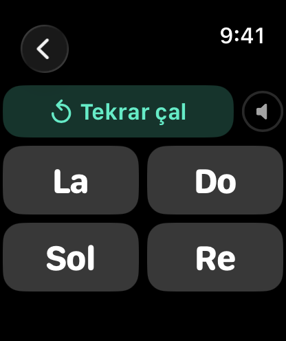
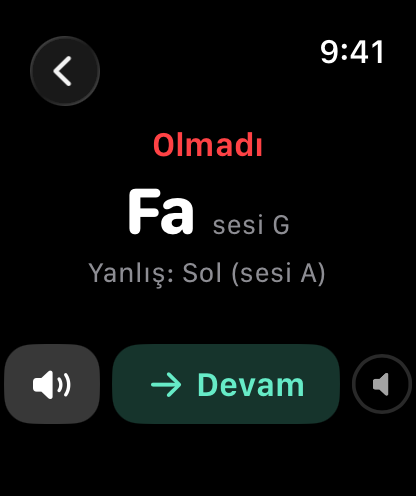
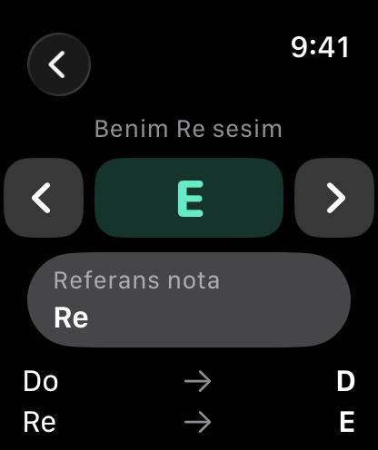
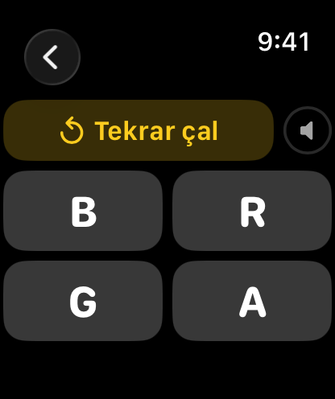
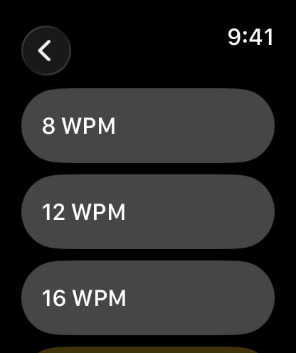

Kolunda Eğitici Oyunlar
Apple Watch için iki alıştırma uygulaması tek pakette. Doremi Hocası ile kulağınızı eğitin, Mors Hocası ile Mors alfabesini öğrenin. Kısa sorular, her cevaptan sonra doğrusu, süre sınırı yok. İkisi de yalnızca Apple Watch’ta çalışır; iPhone gerekmez.
Reklam yok · Takip yok
watchOS 8 veya sonrası gerekir.
Doremi Hocası Kolunda
Bileğinizde kulak eğitimi. Çalan notayı dinleyip dört seçenek arasından doğru adı seçin.
- Nota adları Do Re Mi veya A B C.
- Yedi doğal notayla başlayın, isterseniz diyez ve bemolleri ekleyin.
- Benim sazım: Re dediğiniz telin hangi sesi verdiğini seçin, diğer nota adları da buna göre ayarlanır. Bağlama çalanlar için yapıldı, her transpoze çalgı için işe yarar.
- İstatistikler bugünkü ve toplam başarınızı hem genel hem nota setine göre gösterir.



Kullanım kılavuzu ve SSS → · App Store
Mors Hocası Kolunda
Uluslararası Mors alfabesinin A–Z harflerini iki yönde çalışın.
- Mors → Harf: Bir harfin kodunu dinleyin, dört seçenekten doğru harfi bulun.
- Harf → Mors: Ekrandaki harfin kodunu Nokta ve Çizgi tuşlarıyla yazın. Her dokunuşta sesini duyarsınız.
- Hız 8–25 WPM arasında. Düşük hızla başlayıp telsizde duyduğunuz hıza kadar çıkın.
- İstatistikler bugünkü ve toplam başarınızı gösterir.



Kullanım kılavuzu ve SSS → · App Store
Her iki uygulamada
- Cevap vermeden önce istediğiniz kadar tekrar dinleyin.
- Her sorudan sonra doğru cevap ve sizin cevabınız görünür; tekrar dinleyebilirsiniz.
- Süre sınırı yok, tekrar dinlemenin cezası yok.
- Alıştırma sırasında Digital Crown’u çevirerek sesi ayarlayın. Bluetooth kulaklık da kullanılabilir.
- Yalnızca Apple Watch’ta çalışır. iPhone uygulaması yok, hesap yok, reklam yok, takip yok, veri toplama yok.
Destek
Uygulamalardan biriyle ilgili sorunuz mu var? Bize yazın. Her mesajı okuyoruz.
E-posta Desteği
support [at] hoshinosoftware [dot] com
Genellikle 5 iş günü içinde yanıt veriyoruz.
Gizlilik politikaları: Doremi Hocası · Mors Hocası